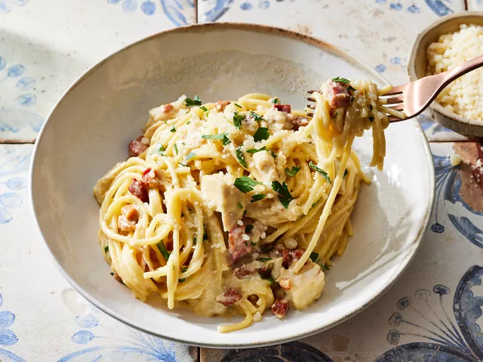

Chicken Carbonara Pasta Bake

Description
Server with a side of roasted vegetables, a salad, and some crusty bread to soak up extra sauce.
Prep Time: 5 mins
Cook Time: 35 mins
Servings: 6
Ingredients
- 10 ounces diced Pancetta
- 16 ounces Spaghetti
- 4 large egg Yolks
- 2 cups grated parmesan cheese
- 1 cup Heavy cream: Room temperature
- 2 cups cooked chicken: Great use for leftover cooked chicken breast.
- 1 tbsp italian parsely: While optional, it adds a nice pop of color and flavor.
Tips
- Reserve extra pasta water to moisten leftovers - just reheat it in the microwave for 1 to 2 minutes.
- Since the pancetta and Parmesan are both salty, boil the pasta in lightly (not heavily) salted water.
Directions
- Gather all ingredients. Preheat oven to 325 degress. Coat a 9x13-inch baking dish with nonstick cooking spray.
- Cook pancetta in a medium skillet over medium-high heat until lightly browned and crisp, about 5 minutes. Set aside.
- Boil spaghetti in lightly salted water for 5 minutes. Drain pasta and reserve 2 cups pasta water.
- Meanwhilm add yolks to a large mixing bowl and whisk until smooth.
- Gradually pour 1 1/2 cups hot pasta water over egg yolks, whisking vigorously, making sure to whisk constatnly so eggs do not scramble.
- Whisk in Parmesan cheese, then heavy cream.
- Add cooked pasta, pancetta, and chicken to the sauce, toss to combine. Transfer pasta mixture to prepared dish.
- Bake until hot and sauce has thickened, 20 minutes, stirring halway through.
- Remove from heat, stir, and let stand for 2 to 3 minutes allowing sauce to continue to thicken. Additional pasta water can be added, as desire, for a saucier pasta.
- Garnish with parsley and extra Parmesan cheese.Nat